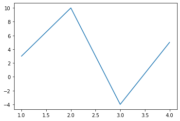
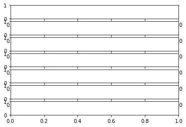
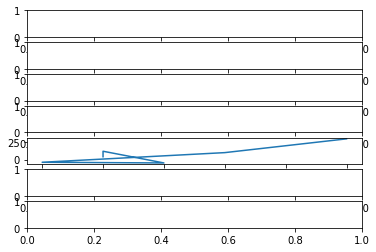

Linear regression¶
import numpy as np
import pandas as pd
import altair as alt
import sklearn
%matplotlib inline
import matplotlib.pyplot as plt
rng = np.random.default_rng()
np.set_printoptions(suppress=True) # Get rid of NumPy scientific notation like 3.37717093e+00
A = np.array([
[0,0,0,4],
[0,0,0,12],
[1,1,1,-5],
[-1,1,-1,-4],
[2,4,8,10],
[4,16,64,30]
])
from sklearn.linear_model import LinearRegression
reg = LinearRegression()
reg.fit(A[:,:-1],A[:,-1])
LinearRegression()
reg.coef_
array([ 2.37357691, -3.02104845, 1.01522372])
reg.intercept_
4.354249404289109
len(A)
6
B = A
np.zeros(size=(len(A),5))
---------------------------------------------------------------------------
TypeError Traceback (most recent call last)
/var/folders/8j/gshrlmtn7dg4qtztj4d4t_w40000gn/T/ipykernel_60784/3358642834.py in <module>
----> 1 np.zeros(size=(len(A),5))
TypeError: zeros() got an unexpected keyword argument 'size'
B = np.zeros(shape=(len(A),5))
B
array([[0., 0., 0., 0., 0.],
[0., 0., 0., 0., 0.],
[0., 0., 0., 0., 0.],
[0., 0., 0., 0., 0.],
[0., 0., 0., 0., 0.],
[0., 0., 0., 0., 0.]])
B[:,1:] = A
B
array([[ 0., 0., 0., 0., 4.],
[ 0., 0., 0., 0., 12.],
[ 0., 1., 1., 1., -5.],
[ 0., -1., 1., -1., -4.],
[ 0., 2., 4., 8., 10.],
[ 0., 4., 16., 64., 30.]])
B[:,0] = 1
B
array([[ 1., 0., 0., 0., 4.],
[ 1., 0., 0., 0., 12.],
[ 1., 1., 1., 1., -5.],
[ 1., -1., 1., -1., -4.],
[ 1., 2., 4., 8., 10.],
[ 1., 4., 16., 64., 30.]])
reg = LinearRegression(fit_intercept=False)
reg.fit(X = B[:,:-1], y = B[:,-1])
LinearRegression(fit_intercept=False)
reg.coef_
array([ 4.3542494 , 2.37357691, -3.02104845, 1.01522372])
reg.intercept_
0.0
Matplotlib¶
# tuple unpacking
fig, ax = plt.subplots()
ax.plot([1,2,3,4],[3,10,-4,5]);

experiment = plt.subplots(7)

type(experiment)
tuple
type(experiment[0])
matplotlib.figure.Figure
type(experiment[2])
---------------------------------------------------------------------------
IndexError Traceback (most recent call last)
/var/folders/8j/gshrlmtn7dg4qtztj4d4t_w40000gn/T/ipykernel_60784/546599183.py in <module>
----> 1 type(experiment[2])
IndexError: tuple index out of range
type(experiment[1])
numpy.ndarray
experiment[1].shape
(7,)
experiment[1][4]
<AxesSubplot:>
ax4 = experiment[1][4]
ax4.plot(A[:,0],A[:,-1])
[<matplotlib.lines.Line2D at 0x7fa12b01eca0>]
experiment[0]

fig2, ax_array = plt.subplots(7)

fig2, ax_array = plt.subplots(17)
ax_array[-1].scatter(A[:,0],A[:,-1])
<matplotlib.collections.PathCollection at 0x7fa12b344850>